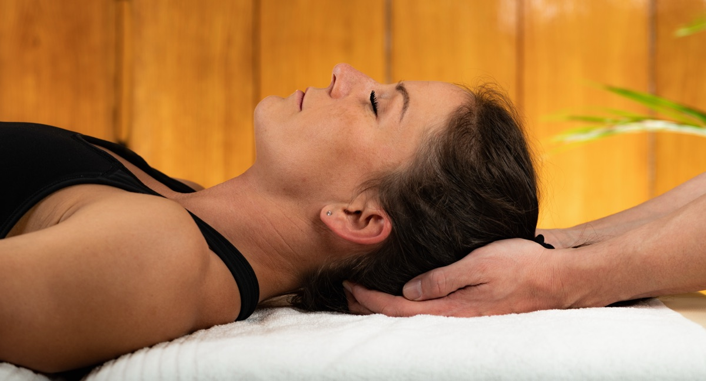
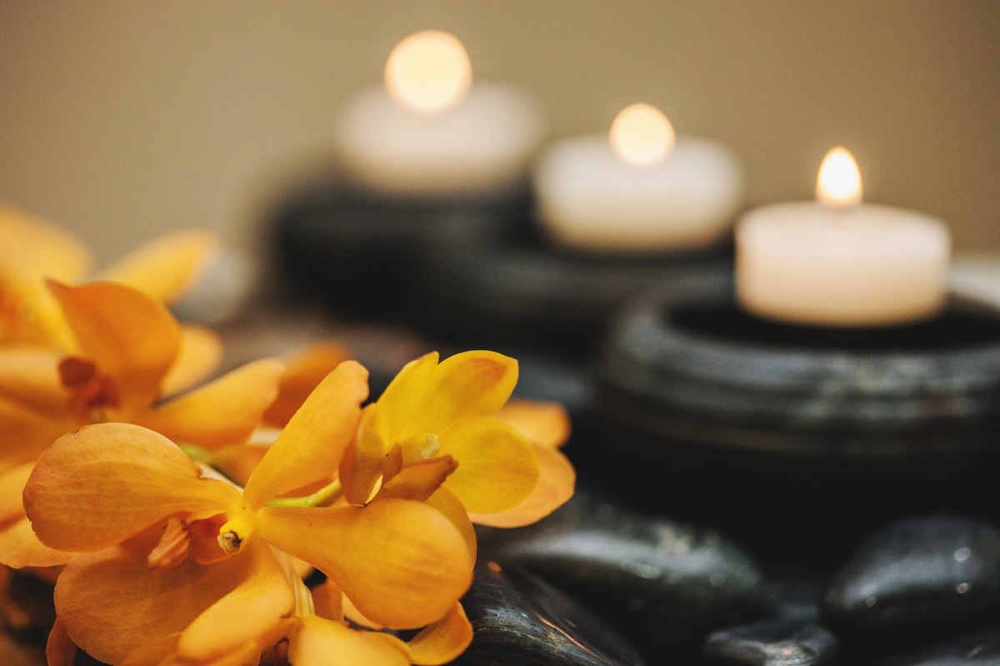
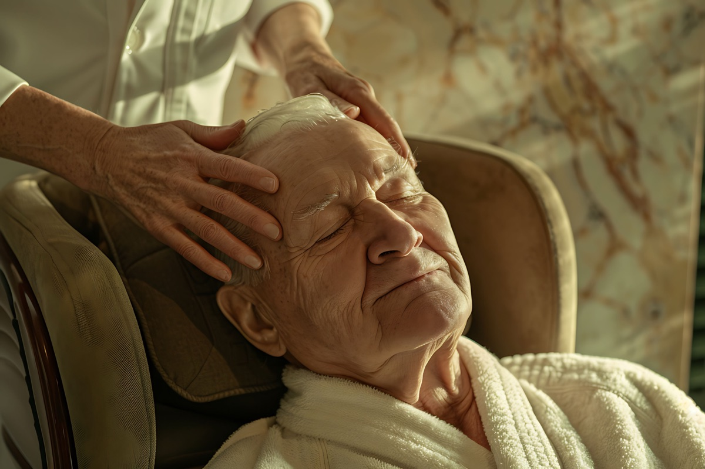
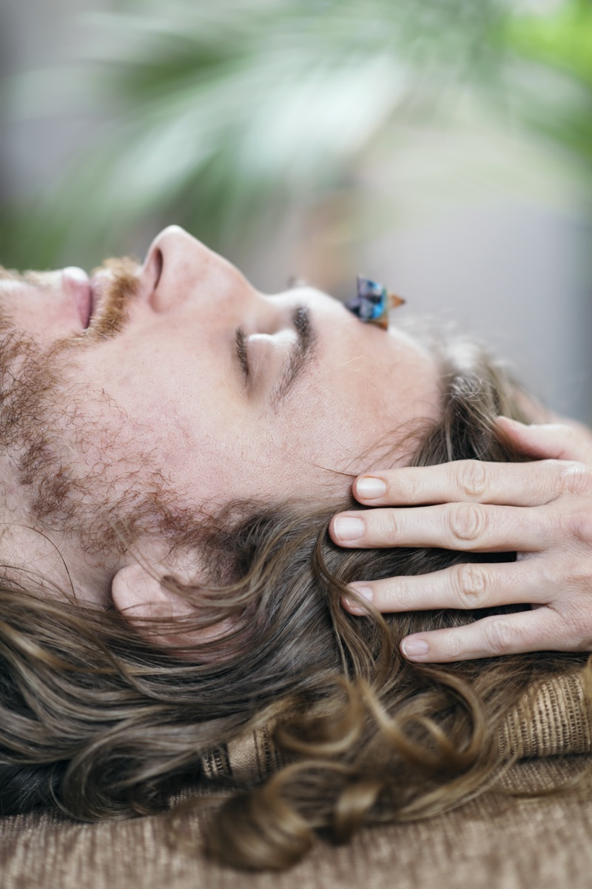
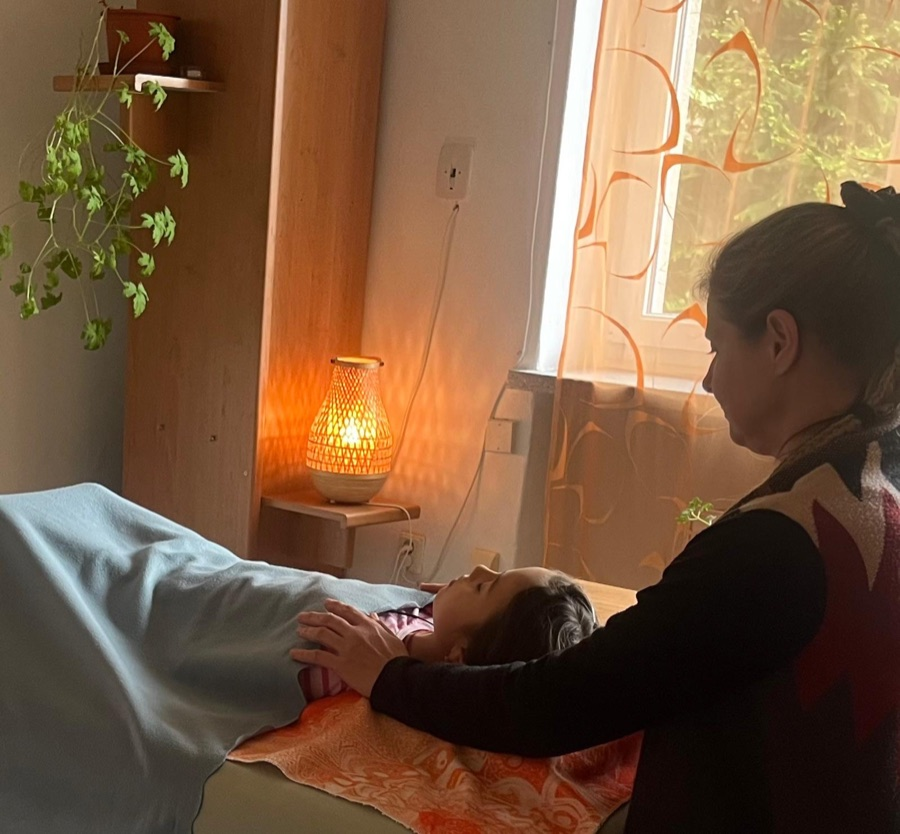

„Kraniosakrální terapie je pro mě vždy zážitkem, který se nedá úplně popsat slovy. Už během prvních minut pociťuji hluboké zklidnění, tělo se uvolňuje, dech se prohlubuje. Jemný dotek, citlivost a přítomnost terapeutky vytvářejí prostor, ve kterém se člověk skutečně může odevzdat.
Odcházím lehčí, klidnější, s pocitem, že se ve mně něco skutečně uzdravilo. KT pro mě není jen relaxací, je to cesta k sobě. A jsem vděčná, že ji můžu zažívat právě tady."
Lehké doteky pro uvolnění a regeneraci těla
Kraniosakrální
terapie
Telecí · Nové Město na Moravě
Polička · Svitavy




O terapii
Co je kraniosakrální terapie
Kraniosakrální terapie je jemná metoda, která pomáhá tělu uvolnit napětí a obnovit přirozenou rovnováhu.
Pracuje se velmi lehkým dotekem, téměř jako dotek motýlích křídel, v oblasti lebky, páteře a křížové kosti. Tento přístup podporuje uvolnění napětí v kraniosakrálním systému i přirozené regenerační a samoléčebné procesy těla.
Ošetření působí na tělesné, psychické i duševní úrovni. Navozuje hlubokou relaxaci nervového systému a vytváří prostor pro zklidnění, odpočinek a obnovu vnitřní rovnováhy.
Indikace
S čím může pomoci
Psychická rovina
- stres a psychické napětí
- vnitřní napětí
- únava a vyčerpání
- potíže se spánkem
- bolesti hlavy
- náladovost
Tělesná rovina
- bolesti zad
- bolesti kloubů
- napětí v těle
- podpora lymfatického systému
- podpora imunitního systému
- bolestivá menstruace
Průběh
Jak probíhá ošetření
Ošetření probíhá v klidném prostředí a je přizpůsobené tomu, co vaše tělo právě potřebuje.
Ležíte pohodlně oblečení na lehátku a většina klientů vnímá příjemné uvolnění, hluboký odpočinek a někdy i lehký spánek.
Během terapie se mohou uvolňovat také emoce nebo napětí, které v těle dlouhodobě zůstávaly. Je to přirozená součást procesu. Vše co se děje, je v pořádku.
„Proto jsem vždycky za to nejcennější pro člověka považoval ony dva příliš zapomenuté bohy, ticho a pomalý rytmus."
Cesta ke kraniosakrální terapii
Můj přístup
Kraniosakrální terapii jsem si zamilovala hned od počátku. Poznala jsem, jak jemný dotek může mít hluboké účinky na lidský organismus a vnímám v tom velkou symboliku. Je to pro mě krásná harmonie jemnosti, ticha a klidného rytmu, který pomáhá tělu zpomalit a navrátit se k rovnováze.
Sama sebe vnímám jako průvodce a s respektem naslouchám tomu, co tělo potřebuje. Vzniká prostor pro zklidnění, uvolnění a návrat k sobě.

Frekvence
Jak často chodit na terapii?
Kraniosakrální terapie se nejčastěji doporučuje v intervalu 1× za 3–4 týdny. Tento rozestup dává tělu prostor plně integrovat účinky terapie.
Při řešení akutních potíží nebo snaze o výraznější změnu se obvykle doporučuje série 6–10 ošetření v kratším odstupu (cca 1–2 týdny).
Pro preventivní účely nebo relaxaci stačí návštěva přibližně 1× za 2–3 měsíce.
Frekvence je vždy individuální a přizpůsobuje se aktuálním potřebám vašeho těla.
Reference
Co říkají klienti
Ceník
Délka a cena setkání
Délka setkání se může mírně lišit
podle aktuálních potřeb a průběhu terapie.
Kraniosakrální terapie
cca 90 minut
- Úvodní rozhovor a naladění
- Samotná terapie
- Prostor pro doznívání na lehátku či krátké sdílení dle potřeby
1 400 Kč